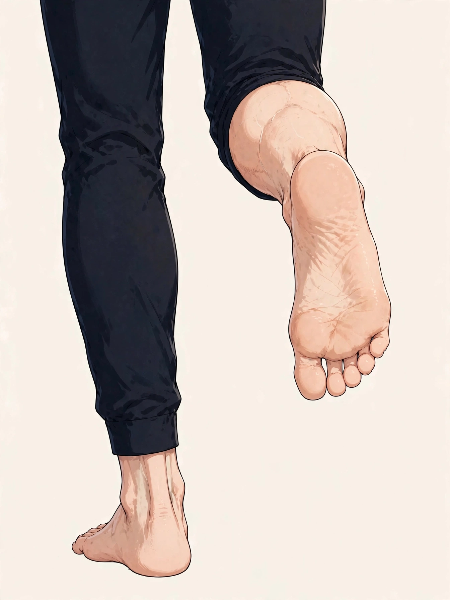
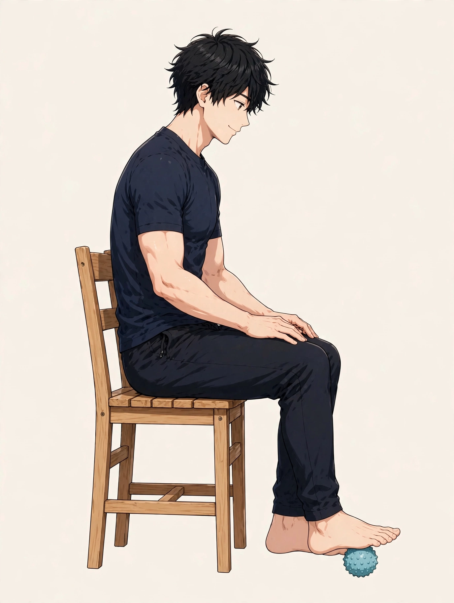

東三国で立ち仕事の後に気になる足の疲れ
男性の足裏・ふくらはぎの整え方とセルフケア、受診の目安

「接客や厨房、現場作業で一日立ち続けていると、仕事が終わるころには足裏がじんわり重く感じる」「ふくらはぎが張って、帰りの電車では思わず座りたくなる」。東三国や新大阪、淀川区周辺で働く男性から、立ち仕事の後にまつわるこうした声を聞くことがあります。足の疲れの感じ方や背景は人によって異なり、一つの原因だけで説明できるものではありません。この記事では原因を断定するのではなく、立ち仕事の後に気になる足の疲れについての一般的な考え方と、考えられる要因、仕事の合間や帰宅後に試せるセルフケア、医療機関に相談したほうがよい目安をまとめます。夕方に脚全体が腫れぼったく感じる状態を扱った脚のむくみ感についてのコラムとは視点を分け、ここでは「立ち仕事の後」という場面と、足裏・ふくらはぎの疲れ感に焦点を当てます。
立ち仕事の後の足の疲れとは：足裏とふくらはぎに集まりやすい感覚
「足の疲れ」は正式な病名ではなく、足裏が重だるい、ふくらはぎが張る感じがする、足の指の付け根がじんじんする、帰宅して靴を脱いだときにどっと疲れを感じる、といった感覚を指して使われることが多い言葉です。立ち仕事といっても、歩き回る動きの多い日もあれば、レジや作業台の前など同じ場所に立ち続ける日もあり、疲れの出方は働き方によっても変わります。一般に、立っている間は体重が両足にかかり続け、ふくらはぎの筋肉は立位のバランスを保つために働き続けるため、一日の終わりに疲れを自覚しやすい、とされています。感じ方も、「足裏の土踏まずのあたりが重い」「ふくらはぎが張って重い」「足首まわりがこわばる感じがする」「休憩で座ると少し落ち着く」など人それぞれです。まずは「仕事のどの場面で、足のどこに、どんな疲れを感じるか」「歩く時間とその場に立つ時間の割合はどうか」「休みの日にどう変わるか」を自分の言葉で整理しておくと、セルフケアの選び方や、専門家に相談するときの伝え方がスムーズになります。
考えられる要因の整理
立ち仕事の後に足の疲れを意識する背景には、立ち方や靴の条件、仕事中の動き方など、いくつかの要因が重なっている場合があります。以下は代表的なものとして挙げられる要因ですが、当てはまるかどうかや程度は人によって異なります。
足裏とふくらはぎの位置は、図1のとおりです。
立ち仕事の疲れは、体重を支える足裏（土踏まずのアーチ）と、立位を保ち続けるふくらはぎ、両者をつなぐ足首まわりに集まって自覚されることが多いとされます。位置は目安です。
- 同じ場所に立ち続ける時間の長さ：レジや調理場、警備など、その場からあまり動かない立ち仕事では、ふくらはぎの筋肉が縮んでは緩む動きを繰り返す機会が少なくなり、疲れを感じやすい、とされています。
- 歩く距離と立位のバランス：配送や倉庫作業のように歩く距離が長い日は、足裏やふくらはぎにかかる負担の積み重ねが大きくなる場合があります。逆に、ほとんど歩かない立ちっぱなしの日も、別の形で疲れが出ることがあります。
- 床の硬さと作業環境：コンクリートやタイルなど硬い床の上で長く立つ環境では、足裏への圧が逃げにくく、疲れを感じやすいと話す方もいます。床の冷たさが気になる職場もあります。
- 靴との相性：サイズや幅が合っていない靴、安全靴のように重さや硬さのある靴を長時間履く日は、足裏や足指の疲れとして表れる場合があります。靴底のすり減り方も見直しの材料になります。
- 休憩の取り方：休憩中に座って脚を休める時間が短い、休憩後もすぐに立ち仕事に戻る日が続くと、疲れがその日のうちに積み重なりやすい、と感じる方もいます。
- 姿勢と体重のかけ方：片脚に体重を寄せて立つ癖、つま先側やかかと側に重心が偏る立ち方が続くと、足裏やふくらはぎの一部に負担が寄る場合があります。
- 睡眠や全身の疲労の残り方：睡眠時間が短い日や忙しい日が続く時期は、全身の疲労感とあわせて足の疲れを強く感じやすいと話す方もいます。前日までの疲れの残り方も振り返りの材料になります。
仕事の合間と帰宅後に取り入れられるセルフケア
仕事の合間の短い時間や、帰宅後に試せるものを中心にまとめました。強い痛みがあるときは無理をせず、気になる症状が強いときは、セルフケアより先に医療機関への相談をご検討ください。
- 休憩中に座って足首を回す：休憩のタイミングで椅子に座り、つま先で円を描くように足首をゆっくり回す、つま先を上げ下げするなど、小さな動きでふくらはぎを動かす時間を作る方法です。
- かかとの上げ下げを数回入れる：壁や台に手をついて立ち、両脚のかかとをゆっくり上げ下げする動きです。仕事の合間の短い時間にも取り入れる方がいます。ふらつくときは無理をしないでください。
- 帰宅後に足裏をボールで転がす：椅子に座り、小さなボールを足裏の下で前後にゆっくり転がす方法です（図2）。体重のかけ具合を調整しながら、気持ちよいと感じる範囲で行ってください。
- ふくらはぎをやさしくさする・温める：帰宅後は手のひらでふくらはぎを下から上へやさしくなでる、湯船に浸かって脚全体を温めるなど、力を入れすぎない範囲で行うケアです。
- 脚を少し高くして休む時間を作る：帰宅後、クッションなどに脚を乗せてしばらく横になる時間を作る方もいます。長く同じ姿勢で固定し続けず、合間に姿勢を変えてください。
- 靴と靴下の状態を確認する：靴底の減り方、サイズや幅が合っているか、インソールのへたり具合を一度確認してみる見直しです。仕事用の靴こそ足に合うものを選ぶことが、疲れ方に関わる場合があります。
- 水分と睡眠のリズムを整える：立ち仕事の日は発汗量も多くなりがちです。こまめな水分補給や、帰宅後の食事と睡眠のリズムを大きく崩さないことも、翌日の疲れの残り方と関わる場合があります。
足裏をボールで転がす動きの目安は、図2のとおりです。

①椅子に座り、小さなボールを足裏の下に置く ②土踏まずから指の付け根へ、ゆっくり前後に転がす ③反対の足も同様に行う、が基本の流れです。体重のかけ具合を調整し、痛みが強いときは無理をしないでください。
セルフケアは一度に全部をやろうとせず、続けられそうなものを一つ選ぶところから始めるのがおすすめです。感じ方には個人差があり、その日の仕事内容や体調によっても変わりますので、無理のない範囲で行ってください。
医療機関への受診を考える目安
次のような様子がある場合は、セルフケアや当院でのケアの前に、整形外科などの医療機関への相談をご検討ください。当院は医療機関ではなく、症状の診断や治療は行いません。足の疲れの背景には、立ち方や靴以外の原因が関わる場合もあります。
- 足裏やかかとに強い痛みがあり歩くのがつらい、朝の最初の一歩で強い痛みが出る
- 片側の脚だけが急に腫れた、皮膚の赤みや熱感を伴っている
- 足のしびれがある、足に力が入りにくい感じがする
- こむら返り（足のつり）が頻繁に起こり、だんだん回数が増えている
- 転倒や打撲、捻ったあとから痛みや腫れが出た
- 休んでも疲れや痛みが数週間以上続き、だんだん強くなっている
上記に当てはまらなくても、気になる症状が続くときは、早めに医療機関や専門家へ相談することが大切です。自己判断だけで様子を見続けないことも一つの目安になります。
当店でのケアと北辰堂のご案内
北辰堂は、大阪市淀川区東三国二丁目にある男性専用の整体院です。施術歴30年の平賀伸人（鍼灸師・国家資格）が、整体とリラクゼーションを行います。当院では鍼灸施術は行いません。営業は平日・土曜17:00〜22:00、日曜10:00〜22:00の完全予約制です。立ち仕事で足の疲れが気になる方は、仕事帰りの平日夜や日曜の時間帯にご相談いただけます。料金は60分 初回2,000円／2回目以降6,000円、90分 初回3,000円／2回目以降9,000円で、お支払いは現金のみです。プライバシーへの配慮のため、詳しい住所はご予約確定後にLINEでご案内します。
施術を受けたからといって体の状態がどうなるかをお約束することはできませんが、その日の体の状態を確認しながら、足裏やふくらはぎだけでなく姿勢や立ち方の様子も見て、ゆっくり体を預けられる時間をご用意しています。仕事中の立ち方や靴など、日常で気になっていることも、カウンセリングの際にお聞かせください。気になるお悩みの例はお悩み別一覧にもまとめています。
コースの内容はメニュー・料金、施術者は施術者について、ご予約の流れは当日の流れとLINE予約の下書きづくり、場所についてはアクセスをご覧ください。あわせて脚のむくみ感についてのコラムや週末の全身の疲労感についてのコラム、よくある質問もご参考ください。
ほかのコラム記事
関連するお悩みページ
ご予約・ご相談はLINEから
東三国・新大阪・淀川区周辺で、体のケアの相談先をお探しの方は、LINE公式アカウント（北辰堂）からお気軽にご連絡ください。現在の状態をお聞きしたうえで、施術の進め方をご案内します。
LINEで予約する